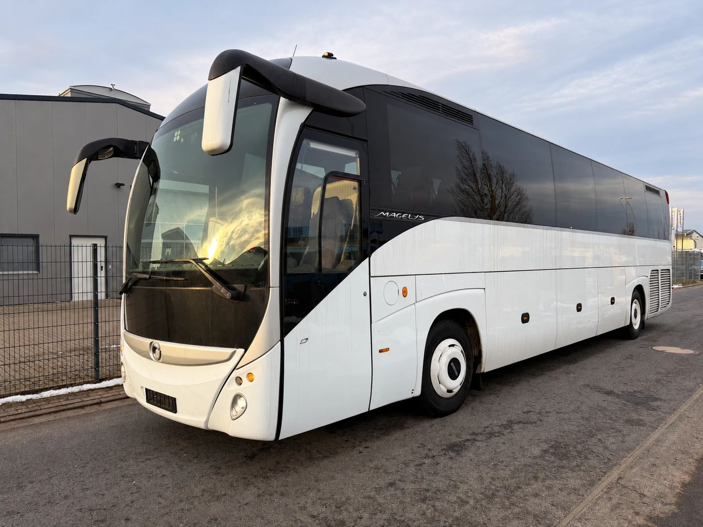
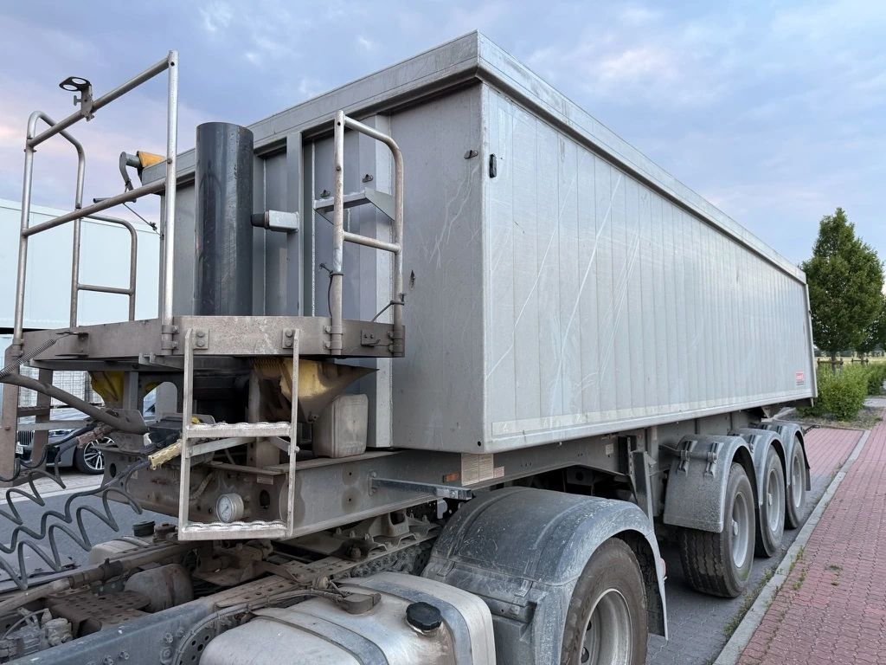

LKW, Transporter, Omnibus, Reisebus: Im Fahrzeugschein steht für jedes dieser Fahrzeuge ein kurzer Code wie N1, N3 oder M3. Er sagt, wofür ein Fahrzeug gebaut ist und wie schwer es sein darf. Davon hängt mehr ab, als viele denken: welcher Führerschein nötig ist, ob Maut fällig wird und wer das Fahrzeug später kauft.
Wenn uns jemand ein Nutzfahrzeug anbietet, ist dieser Code eine der ersten Angaben, auf die wir schauen. In diesem Beitrag erklären wir, was hinter den Fahrzeugklassen steckt und woran Sie erkennen, in welche Klasse Ihr LKW, Bus oder Transporter gehört.
Was ist ein Nutzfahrzeug?
Einen einheitlichen gesetzlichen Begriff „Nutzfahrzeug“ gibt es in Deutschland nicht. Gemeint sind Fahrzeuge, die für eine Arbeit gebaut sind: Güter transportieren oder viele Menschen befördern. Dazu zählen:
- Transporter, Kastenwagen und Pritschenwagen
- LKW vom 7,5-Tonner bis zum schweren Vierachser
- Sattelzugmaschinen und Sattelauflieger
- Busse: Kleinbus, Linienbus, Überlandbus und Reisebus
- Anhänger
- Sonderfahrzeuge wie Kipper, Kranwagen oder Kommunalfahrzeuge
Genauer wird es mit den Fahrzeugklassen der EU. Die Verordnung (EU) 2018/858 teilt Fahrzeuge in Klassen ein: M für die Beförderung von Personen, N für Güter und O für Anhänger. Nutzfahrzeuge im engeren Sinn sind alle Fahrzeuge der Klassen N und O sowie die Busse der Klassen M2 und M3. Der normale PKW ist M1.
Oft hört man auch „leichte“ und „schwere“ Nutzfahrzeuge. Leichte Nutzfahrzeuge sind die Transporter der Klasse N1. Schwere Nutzfahrzeuge sind LKW über 3,5 Tonnen und Busse.
Klasse N: LKW und Transporter für Güter
Bei den Fahrzeugen für Güter entscheidet allein die technisch zulässige Gesamtmasse, also das Gewicht, das das Fahrzeug voll beladen haben darf. Das Leergewicht spielt keine Rolle.
- N1: bis 3,5 Tonnen. Transporter, Kastenwagen, Pritschenwagen und viele Pick-ups. Das sind die leichten Nutzfahrzeuge.
- N2: über 3,5 bis 12 Tonnen. Die mittleren LKW, etwa der klassische 7,5-Tonner und der 12-Tonner im Verteilerverkehr.
- N3: über 12 Tonnen. Die schweren LKW: Sattelzugmaschinen, Kipper, Betonmischer, Wechselbrücken-LKW und Kranwagen.
Eine Sattelzugmaschine wird nach ihrem eigenen zulässigen Gewicht eingeordnet, nicht nach dem ganzen Sattelzug. Die meisten Sattelzugmaschinen haben 18 Tonnen oder mehr und gehören damit zu N3.
Auffällig viele LKW liegen knapp unter einer Grenze, etwa bei 7,49 oder 11,99 Tonnen. Das hat mit Führerschein und früheren Mautgrenzen zu tun. Mehr dazu lesen Sie in unseren Beiträgen über den Mercedes-Benz Atego und den MAN 12-Tonner.

Ist N1 ein LKW oder ein PKW?
Diese Frage stellen sich viele. Nach der Fahrzeugklasse ist ein N1-Fahrzeug für Güter gebaut und damit kein PKW. In der Zulassung wird es meist als LKW geführt, auch wenn es nur ein Transporter ist. Fahren dürfen Sie es trotzdem mit dem normalen Führerschein der Klasse B.
Was bedeutet das G bei N1G oder N3G?
Das G steht für geländegängig. Solche Fahrzeuge haben zum Beispiel Allradantrieb und mehr Bodenfreiheit. Typisch sind Allrad-Kipper für die Baustelle oder Fahrzeuge für Forst und Winterdienst. Das G gibt es auch bei den Bussen und Transportern, etwa M1G oder N1G.
Klasse M: Kleinbus, Omnibus und Reisebus
Bei den Fahrzeugen für Personen zählen zuerst die Sitzplätze, dann das Gewicht:
- M1: höchstens 8 Sitzplätze außer dem Fahrer. Das ist der PKW. Auch ein 9-Sitzer mit Fahrer gehört noch dazu.
- M2: mehr als 8 Sitzplätze außer dem Fahrer, bis 5 Tonnen. Das sind die meisten Kleinbusse, zum Beispiel der Mercedes-Benz Sprinter 519 als Bus.
- M3: mehr als 8 Sitzplätze außer dem Fahrer, über 5 Tonnen. Das sind die großen Busse: Stadtbus, Gelenkbus, Überlandbus, Reisebus und Doppeldecker.

Die Unterklassen bei Bussen
Busse der Klassen M2 und M3 werden zusätzlich nach ihrem Einsatz eingeteilt. Bis 22 Fahrgäste gibt es die Klassen A (mit Stehplätzen) und B (nur Sitzplätze). Bei mehr als 22 Fahrgästen gibt es drei Klassen:
- Klasse I: mit vielen Stehplätzen für den Stadtverkehr
- Klasse II: vor allem Sitzplätze, Stehen nur im Gang, typisch für Überlandbusse
- Klasse III: nur Sitzplätze, das ist der Reisebus
Wie sich die drei großen Bustypen im Alltag unterscheiden, erklären wir im Beitrag Linienbus, Überlandbus, Reisebus.
Was heißt eigentlich Omnibus?
„Omnibus“ kommt aus dem Lateinischen und heißt „für alle“. Im deutschen Recht heißt der Bus bis heute Kraftomnibus. Das Personenbeförderungsgesetz beschreibt ihn als Fahrzeug, das nach Bauart und Ausstattung für mehr als neun Personen einschließlich Fahrer geeignet und bestimmt ist (§ 4 Abs. 4 PBefG). Das passt genau zur Grenze zwischen M1 und M2: Ab dem zehnten Platz ist ein Fahrzeug kein PKW mehr, sondern ein Omnibus.

Klasse O: Anhänger und Auflieger
Auch Anhänger haben eine eigene Klasse. Sie richtet sich nach der zulässigen Gesamtmasse:
- O1: bis 0,75 Tonnen, etwa kleine PKW-Anhänger
- O2: über 0,75 bis 3,5 Tonnen
- O3: über 3,5 bis 10 Tonnen
- O4: über 10 Tonnen, dazu gehören fast alle Sattelauflieger und schweren Anhänger

Wo steht die Fahrzeugklasse im Fahrzeugschein?
Im Fahrzeugschein, also der Zulassungsbescheinigung Teil I, finden Sie alle wichtigen Angaben auf einen Blick:
- Feld J: die Fahrzeugklasse, zum Beispiel N3 oder M3
- Feld 5: die Bezeichnung der Klasse und des Aufbaus, zum Beispiel Sattelzugmaschine oder Kraftomnibus
- Feld F.1: die technisch zulässige Gesamtmasse in Kilogramm
- Feld S.1 und S.2: die Sitzplätze einschließlich Fahrer und die Stehplätze
Ein Foto dieser Seite reicht oft schon aus, damit ein Händler ein Fahrzeug richtig einordnen kann.
Was die Klasse im Alltag bedeutet
Führerschein
Welchen Führerschein Sie brauchen, hängt eng mit der Fahrzeugklasse zusammen (§ 6 FeV):
- Klasse B: bis 3,5 Tonnen und höchstens 8 Fahrgastplätze, also PKW und Transporter der Klasse N1
- Klasse C1: über 3,5 bis 7,5 Tonnen, also der 7,5-Tonner aus der Klasse N2
- Klasse C: alle LKW über 3,5 Tonnen, also N2 und N3
- Klasse D1: Busse mit höchstens 16 Fahrgastplätzen und bis 8 Meter Länge, also die meisten Kleinbusse
- Klasse D: alle Busse mit mehr als 8 Fahrgastplätzen
Wer gewerblich Güter oder Fahrgäste befördert, braucht für LKW und Busse außerdem die Berufskraftfahrerqualifikation.
Maut
Seit dem 1. Juli 2024 gilt die LKW-Maut in Deutschland schon für Fahrzeuge zur Güterbeförderung mit mehr als 3,5 Tonnen technisch zulässiger Gesamtmasse, also für N2 und N3. Ausgenommen sind unter anderem Fahrzeuge von Handwerksbetrieben unter 7,5 Tonnen. Busse sind von der LKW-Maut befreit, egal wie groß sie sind (§ 1 BFStrMG).
Warum die Klasse beim Verkauf zählt
Die Fahrzeugklasse bestimmt, wer ein Fahrzeug kaufen und fahren kann. Das wirkt sich direkt auf die Nachfrage aus:
- N1: Transporter fährt fast jeder mit dem Führerschein B. Der Kreis der Käufer ist groß, das Angebot aber auch.
- N2: Bei 7,5-Tonnern zählt jedes Kilo. Ein LKW knapp unter der Grenze lässt sich mit C1 fahren, ein paar hundert Kilo mehr verlangen den Führerschein C.
- N3: Bei schweren LKW und Sattelzugmaschinen schauen Käufer genau auf Euro-Norm, Achsen und Aufbau. Die Euro-Norm bestimmt auch die Höhe der Maut mit.
- M2 und M3: Bei Bussen zählen vor allem die Anzahl der Sitz- und Stehplätze und die Unterklasse. Ein Reisebus der Klasse III spricht andere Käufer an als ein Stadtbus der Klasse I.
Je genauer Sie diese Angaben machen, desto schneller und genauer kann ein Angebot ausfallen.
Kurz beantwortet
Ist ein 9-Sitzer ein Bus? Nein. Mit 8 Fahrgastplätzen und Fahrer ist er ein PKW der Klasse M1 und darf mit dem Führerschein B gefahren werden.
Ist ein Transporter ein LKW? In der Zulassung meist ja. Er gehört zur Klasse N1, braucht aber nur den Führerschein B.
Ab wann ist ein LKW ein schwerer LKW? Ab mehr als 12 Tonnen zulässiger Gesamtmasse, dann gehört er zur Klasse N3.
Welche Klasse hat eine Sattelzugmaschine? Fast immer N3.
Welche Klasse hat ein Reisebus? M3, und als Bus nur mit Sitzplätzen zusätzlich die Klasse III.
Wir kaufen Nutzfahrzeuge aller Klassen an
Wir bringen über 30 Jahre Erfahrung im Fahrzeughandel mit und kaufen Nutzfahrzeuge aller Klassen an: Transporter, LKW, Sattelzugmaschinen, Auflieger, Kleinbusse, Linienbusse und Reisebusse, einzeln oder als ganze Flotte. Mehr dazu finden Sie auf unseren Seiten Nutzfahrzeug Ankauf, LKW verkaufen, Transporter verkaufen, Reisebus verkaufen und Linienbus verkaufen.
- Sie schicken uns ein Foto des Fahrzeugscheins und einige Fotos des Fahrzeugs.
- Wir ordnen das Fahrzeug ein, bewerten es und klären offene Fragen am Telefon.
- Sie bekommen ein Angebot.
- Nach Ihrer Zusage erstellen wir den Kaufvertrag und schließen das Geschäft ab.
- Unsere Fahrer holen das Fahrzeug bei Ihnen ab, deutschlandweit.
Rufen Sie uns an oder schreiben Sie uns über die Kontaktseite.
Hinweis: Dieser Beitrag dient der allgemeinen Information und ersetzt keine Rechts- oder Steuerberatung. Alle Angaben ohne Gewähr, Stand: 6. November 2026. Genannte Marken und Modellbezeichnungen gehören ihren jeweiligen Inhabern. Die ECS GmbH ist ein unabhängiger Händler und steht in keiner Verbindung zu den Herstellern.